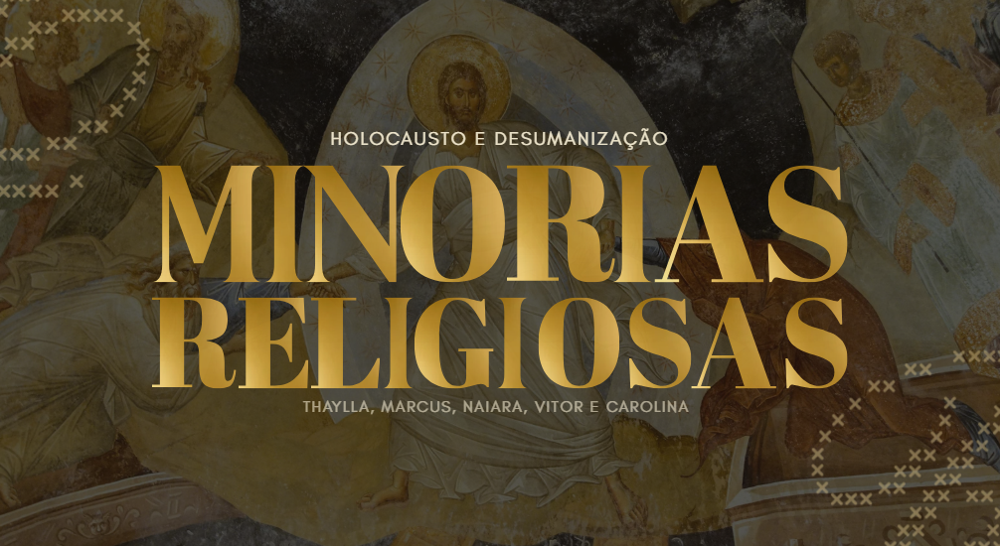
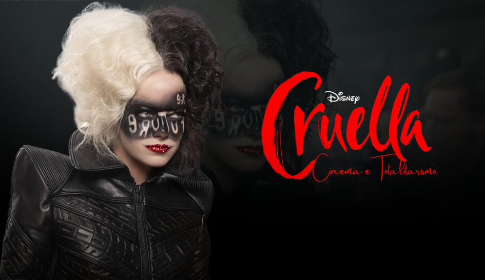

Este trabalho teve como escopo o desenvolvimento de dois dossiês históricos e uma apresentação conjunta sobre os mesmos. O primeiro documento aborda a queda da França durante o período da segunda guerra mundial e seus impactos diretos e indiretos no cenário mundial. Já o segundo gira em torno da resistência britânica durante o mesmo período.
Habilidades e Competências: Não informado.
A atividade em anexo consistiu na elaboração de uma apresentação que investigasse como grupos minoritários no aspecto religioso são alvos constantes de discriminação e, principalmente, intolerância por parte da grande maioria da sociedade brasileira. O trabalho aponta suas principais causas e consequências, e para além, sugere soluções simples ao combate pela intolerância religiosa.
Habilidades e Competências: Não informado.

AnexoO desenvolvimento desta atividade girou em torno da análise de um filme, com o objetivo de apontar traços e características de um sistema totalitário. Eu, juntamente ao meu grupo, escolhemos Cruella.
Habilidades e Competências

Anexo